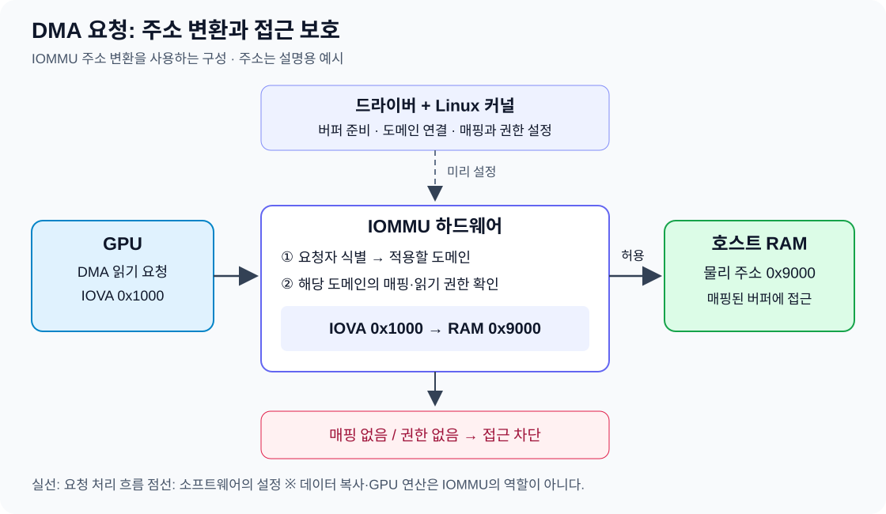
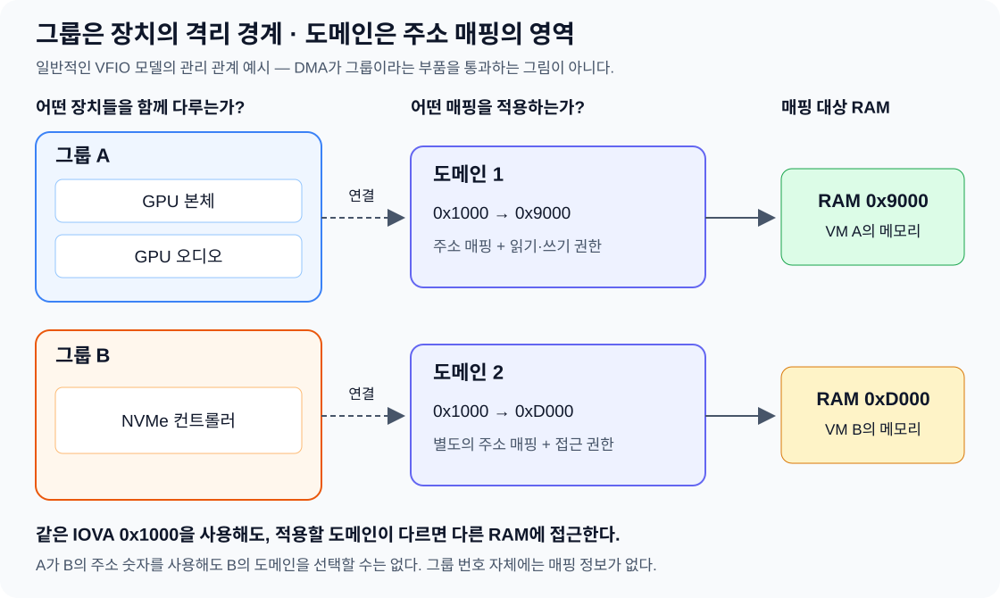
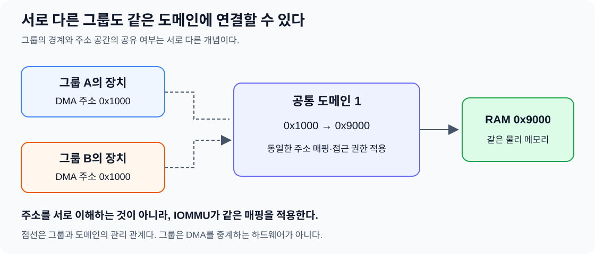

GPU·SSD·네트워크 카드 같은 장치는 시스템 RAM에 직접 데이터를 읽고 쓸 수 있다. 그런데 장치가 잘못된 주소에 접근하면 운영체제나 다른 프로그램의 메모리를 손상시킬 수 있다.
IOMMU는 장치의 메모리 접근에 주소 변환과 접근 보호를 제공하는 기능이다. 여기에 Linux의 도메인과 그룹 개념을 연결하면, GPU를 VM에 넘길 때 왜 IOMMU 그룹을 확인하는지도 이해할 수 있다.
1. DMA: 장치가 RAM에 데이터를 읽고 쓰는 방식
DMA(Direct Memory Access)는 CPU가 데이터를 일일이 복사하지 않아도 장치가 RAM을 읽거나 쓸 수 있게 하는 방식이다.
예를 들어 호스트 RAM의 데이터를 GPU로 옮겨 연산하는 경우에는 다음 과정이 일어난다.
- 애플리케이션과 드라이버가 RAM에 입력 데이터를 준비한다.
- 드라이버가 GPU에 전송할 주소와 작업을 전달한다.
- GPU의 복사 엔진이 DMA로 데이터를 VRAM에 옮긴다.
- GPU가 VRAM에 있는 데이터를 사용해 연산한다.
호스트 RAM
│
│ DMA 전송
▼
GPU VRAM
│
▼
GPU 연산
CPU는 작업을 준비하고 결과를 처리하지만, 전송 중 모든 바이트를 직접 옮기지는 않는다.
또한 GPU가 연산할 때마다 RAM에서 데이터를 가져오는 것은 아니다. 모델 가중치처럼 이미 VRAM에 올라간 데이터는 여러 연산에서 재사용할 수 있다.
DMA의 “직접”은 CPU의 일일이 복사를 거치지 않는다는 뜻이다. 주소 변환이나 접근 보호를 우회한다는 의미는 아니다.
2. IOMMU: DMA 주소를 변환하고 접근을 제한한다
IOMMU(Input–Output Memory Management Unit)는 장치가 메모리에 접근할 때 두 가지 역할을 한다.
| 기능 | 의미 |
|---|---|
| 주소 변환 | 장치가 사용하는 DMA 주소를 실제 RAM의 물리 주소로 연결 |
| 접근 보호 | 유효한 매핑과 읽기·쓰기 권한이 있는 접근만 허용 |
IOMMU 주소 변환을 사용하는 구성에서는 장치가 사용하는 주소와 실제 RAM 주소가 다를 수 있다. 장치 측 주소를 IOVA(I/O Virtual Address)라고 부른다.
아래 주소는 설명용 예시다.
GPU의 요청: DMA 주소 0x1000에서 읽기
│
▼
IOMMU
• 이 주소에 매핑이 있는가?
• 읽기 권한이 있는가?
• 실제 RAM 주소 0x9000으로 변환
│
▼
RAM의 0x9000에 접근
매핑이 없거나 해당 접근 권한이 없으면 요청을 차단한다.
따라서 IOMMU는 단순히 숫자를 바꾸는 번역기가 아니다. 어떤 메모리를 장치에 연결해 주느냐를 통해 접근 가능한 범위도 제한한다.
IOMMU 자체가 데이터를 복사하거나 GPU 연산을 수행하는 것은 아니다.

3. 매핑은 드라이버와 커널이 준비한다
IOMMU가 스스로 어떤 데이터를 GPU에 허용할지 결정하는 것은 아니다.
호스트에서 장치를 사용하는 일반적인 흐름은 다음과 같다.
- 드라이버가 데이터 전송에 사용할 RAM 버퍼를 준비한다.
- 드라이버가 Linux의 DMA API로 버퍼의 DMA 매핑을 요청한다.
- 커널이 필요한 매핑을 준비하고 장치에서 사용할 DMA 주소를 제공한다.
- 드라이버가 그 주소를 장치에 전달한다.
- 장치가 DMA 요청을 보내면 IOMMU가 설정된 매핑과 권한을 적용한다.
| 주체 | 역할 |
|---|---|
| 드라이버 | 사용할 버퍼와 작업을 준비하고 장치에 DMA 주소 전달 |
| 커널 | DMA·IOMMU 매핑 관리 |
| 장치 | 전달받은 주소로 DMA 요청 |
| IOMMU 하드웨어 | 요청의 주소 변환과 접근 보호 |
드라이버는 장치에 사용할 주소를 알려주고, IOMMU는 그 주소로 발생하는 접근을 통제한다.
4. 도메인: 어느 주소 매핑을 적용할지 정하는 영역
장치 A와 B가 모두 DMA 주소 0x1000을 사용한다고 해서 같은 RAM에 접근해야 하는 것은 아니다.
서로 다른 메모리에 접근하도록 구성하려면 각각 다른 주소 매핑을 적용하면 된다. Linux에서 이런 주소 공간과 매핑을 관리하는 개념이 IOMMU 도메인(Domain)이다.
장치 A → 도메인 1
DMA 0x1000 → RAM 0x9000
장치 B → 도메인 2
DMA 0x1000 → RAM 0xD000
IOMMU는 DMA 주소 숫자만 보고 번역하지 않는다. 일반적인 PCIe 구성에서는 요청자 식별 정보인 Requester ID 등을 바탕으로 요청에 적용할 변환 문맥을 찾는다. 커널은 장치와 도메인의 연결을 설정한다.
개념적으로는 두 단계다.
요청한 장치 식별 → 적용할 도메인 선택
요청의 DMA 주소 → 그 도메인의 매핑으로 RAM 주소 변환
따라서 장치 A가 B의 DMA 주소 숫자를 알아내서 사용해도 B의 매핑을 선택할 수는 없다.
- A의 도메인에 그 주소가 있으면 A에게 매핑된 RAM에 접근한다.
- A의 도메인에 그 주소가 없으면 접근이 차단된다.
DMA 주소는 적용할 주소 공간까지 정해져야 실제 RAM 위치가 결정된다.
5. 주소 매핑이 어떻게 격리로 이어지는가?
GPU를 VM A에 할당한다고 가정하자.
그 GPU에 적용할 도메인에 VM A의 메모리를 매핑하고, VM B의 메모리는 매핑하지 않으면 된다. 정상적으로 보호되는 DMA 경로에서 GPU는 VM B의 RAM으로 연결되는 주소를 갖지 못한다.
VM A에 할당한 GPU
│
▼
도메인 A
├── VM A에 허용된 RAM: 매핑 있음
└── VM B의 RAM: 매핑 없음
이것이 주소 변환과 격리의 연결이다.
접근을 허용할 메모리만 매핑하면, 주소 변환표가 메모리 접근을 제한하는 경계가 된다.
이 기능은 VM 전용이 아니다. 호스트가 GPU를 직접 사용할 때도 드라이버가 준비한 RAM 버퍼에 대한 접근을 변환하고 제한할 수 있다.
다만 IOMMU 비활성화나 통과 모드 등 설정에 따라 동작은 달라진다. IOMMU 지원 여부와 실제 보호 구성을 구분해야 한다.
6. 그룹: 장치를 독립적으로 격리할 수 있는 경계
장치마다 다른 도메인을 연결하면 항상 안전하게 분리할 수 있을까?
그러려면 하드웨어가 다음 조건을 만족해야 한다.
- 어느 장치가 보낸 요청인지 구별할 수 있어야 한다.
- 장치 사이에 IOMMU의 보호를 우회할 수 있는 경로가 없어야 한다.
하지만 일부 하드웨어 연결 구조에서는 여러 장치의 요청이 같은 식별자로 보이거나, 장치 사이의 통신을 충분히 통제할 수 없는 경우가 있다.
Linux는 독립적으로 격리할 수 있다고 보장하기 어려운 장치들을 IOMMU 그룹(Group)으로 묶는다.
그룹은 다른 장치들로부터 안전하게 격리할 수 있는 최소 장치 묶음이다.
그룹 A
├── GPU 본체
├── GPU 오디오
└── GPU USB 기능
그룹 B
└── NVMe 컨트롤러
이 예시에서는 그룹 A와 B를 서로 독립적으로 다룰 수 있다. 하지만 그룹 A 내부의 기능들을 서로 다른 신뢰 영역으로 나눠도 안전하다고 보장하지는 않는다.
그룹 번호 자체는 식별자일 뿐이다. 16이라는 번호가 특별한 권한이나 메모리 범위를 뜻하지는 않는다.
7. 그룹과 도메인은 서로 다른 역할을 한다
그룹에 주소 매핑 정보가 저장되는 것으로 생각하면 두 개념이 섞인다.
| 개념 | 답하는 질문 |
|---|---|
| 그룹 | 어떤 장치들을 하나의 격리 단위로 취급해야 하는가? |
| 도메인 | 연결된 장치들의 DMA 주소를 어떤 RAM 주소로 변환하고, 어떤 접근을 허용할 것인가? |
일반적인 VFIO 패스스루에서는 그룹을 같은 격리 영역으로 다루며, 그에 맞는 도메인에 연결한다.
그룹 A: GPU·오디오 ─── 도메인 1
└── 주소 매핑·접근 권한
그룹 B: 다른 장치 ─── 도메인 2
└── 별도의 주소 매핑·접근 권한
이 그림은 관리상의 연결 관계다. DMA 요청이 “그룹”이라는 하드웨어 부품을 통과한다는 뜻은 아니다.

8. 서로 다른 그룹도 같은 도메인을 사용할 수 있다
그룹이 다르다는 것은 필요하면 독립적으로 격리할 수 있다는 뜻이다. 반드시 서로 분리해서 사용해야 한다는 뜻은 아니다.
여러 그룹을 같은 도메인에 연결할 수도 있다.
그룹 A ──┐
├── 도메인 1
그룹 B ──┘ └── 공통 주소 매핑·접근 권한
이 경우 두 그룹의 장치가 같은 DMA 주소를 요청하면 같은 RAM 위치로 연결된다.
| 요청 | 공통 도메인의 매핑 결과 |
|---|---|
그룹 A의 장치가 0x1000에 접근 |
RAM 0x9000 |
그룹 B의 장치가 0x1000에 접근 |
RAM 0x9000 |
장치들이 서로의 주소나 작업을 이해하는 것은 아니다. IOMMU가 두 장치의 요청에 같은 매핑을 적용하는 것이다.
반대로 두 그룹을 다른 도메인에 연결하면 서로 다른 주소 공간을 적용할 수 있다.

9. GPU 패스스루에서 그룹을 확인하는 이유
GPU를 VM에 넘길 때는 먼저 GPU가 존재하는지 확인한다. 그다음에는 같은 IOMMU 그룹에 어떤 장치가 들어 있는지 확인해야 한다.
GPU 본체와 오디오·USB 기능이 같은 그룹이라면, GPU 본체만 넘기고 나머지를 호스트가 계속 사용하는 구성을 아무 검토 없이 선택할 수는 없다.
일반적인 VFIO 패스스루에서는 같은 그룹의 다른 기능도 호스트 드라이버에서 분리하는 등 그룹 전체의 사용 상태를 고려해야 한다. 모든 기능을 반드시 VM에 노출해야 한다는 뜻은 아니지만, 같은 그룹의 나머지 기능을 무시할 수는 없다.
만약 호스트에 필요한 SSD나 네트워크 장치까지 같은 그룹에 있다면, 그 장치들과의 분리 가능성부터 다시 검토해야 한다.
따라서 GPU 패스스루에서 확인하는 흐름은 다음과 같다.
GPU의 PCI 주소 확인
↓
GPU가 속한 IOMMU 그룹 확인
↓
같은 그룹의 장치와 호스트 사용 상태 확인
↓
그룹의 격리 경계를 고려해 VFIO·VM 할당 구성
IOMMU의 핵심 기능은 DMA 주소 변환과 접근 보호, 도메인은 그 매핑을 관리하는 영역, 그룹은 독립적으로 격리해서 취급할 수 있는 장치의 경계다.